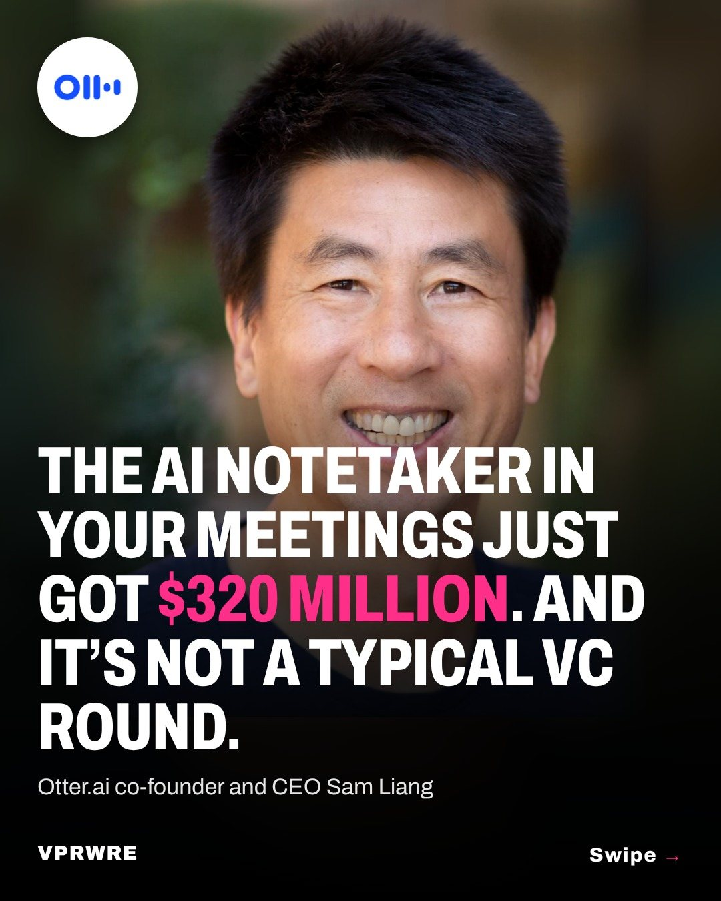

Funding
The AI notetaker in your meetings just got $320 million. And it’s not a typical VC round.
Swipe to see how Otter.ai landed $320 million without a typical VC round.

Otter.ai, the AI notetaker that joins your meetings and writes up what was said, closed $320 million in growth financing from General Catalyst’s Customer Value Fund. No valuation was disclosed.
The fund works differently from a normal round: it pays for a company’s sales and marketing, then gets paid back from a capped share of the revenue that spending brings in. TechCrunch reports it doesn’t dilute Otter’s equity. General Catalyst used the same fund to put $1 billion into Grammarly in 2025.
Otter says it has more than 40 million users, including teams at over 86% of the Fortune 500, and it passed $100 million in annual recurring revenue in March 2025. The money goes to enterprise growth, international expansion, product and what CEO Sam Liang calls “enterprise agentic workflows.”
“Voice is one of the biggest untapped opportunities in enterprise AI,” said Pranav Singhvi, a partner at General Catalyst and co-founder of its Customer Value Fund.
The carousel
4 slides · Open on Instagram
Disclosure: VPRWRE drafts with Claude, Anthropic’s AI.